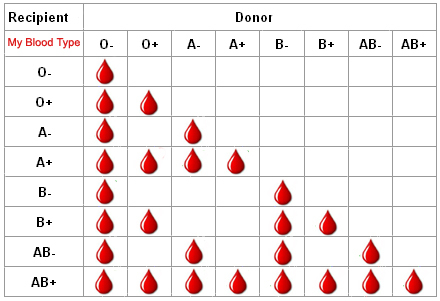

Blood Donation
Why donate blood?
Apart from saving someone's life, there are many benefits of blood donation, here are few of them:
- Excess iron in the body can be harmful as it increases the risk of
diseases such as heart disease, cancer, and liver damage. Regular
blood donation can help reduce the body's iron levels.
- Blood donation can stimulate the immune system, leading to an
increase in the production of white blood cells and antibodies.
This enhanced immune function can help the body fight off
infections and diseases more effectively.
- After donating blood, the body works to replenish the lost blood supply. This process
stimulates the production of new red blood cells by the bone marrow, which can improve
the overall health and function of the circulatory system.
Who can donate Blood to whom?
Those with "—" (Rh factor absent) sign can donate to those with "+" (Rh factor absent) sign in their blood group but not vice-versa.
Each alphabet group can donate within themselves keeping in mind the previously stated rule (i.e. Rh factor consideration). O can donate
blood to every blood group and AB can can receive blood from every blood group.
O- is the Universal Donor.
AB+ is the Universal Recipient.
For more clarity, refer the below image.

Blood Donation Form